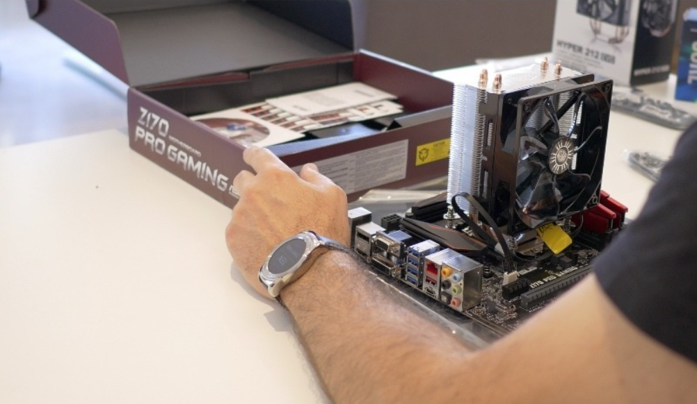

Guía Definitiva 2025: Cómo Armar tu Primer PC Gamer
Armar tu propio PC Gamer puede parecer una tarea intimidante, pero con la guía correcta, es una de las experiencias más gratificantes para cualquier entusiasta. No solo te permite personalizar cada aspecto de tu máquina, sino que también te ayuda a entender mejor la tecnología que impulsa tus juegos favoritos. ¡Vamos a ello!
Paso 1: La Elección de Componentes (El Corazón de tu PC)
Todo comienza con el "cerebro" y el "músculo" de tu PC. Define tu presupuesto y el tipo de juegos que quieres jugar (1080p, 1440p, 4K).
- Procesador (CPU): Elige entre Intel Core (i5, i7) o AMD Ryzen (5, 7) según tu presupuesto. Los Ryzen suelen ofrecer un gran rendimiento multitarea.
- Tarjeta Gráfica (GPU): La pieza más importante para gaming. Las series NVIDIA GeForce RTX o AMD Radeon RX son el estándar. Una RTX 4060 o RX 7600 son excelentes puntos de partida para 1080p en 2025.
- Placa Madre (Motherboard): Asegúrate de que el socket sea compatible con tu CPU (ej. AM5 para Ryzen, LGA1700 para Intel).
- Memoria RAM: 16 GB es el mínimo recomendado para gaming hoy en día. 32 GB te dará más holgura para el futuro. La velocidad (MHz) también importa.
- Almacenamiento (SSD): Un SSD NVMe es esencial para tiempos de carga rápidos. 1 TB es un buen punto de partida.
Paso 2: El Ensamblaje
Este es el momento de la verdad. Trabaja sobre una superficie limpia y no metálica para evitar la estática. El orden general es: 1. Instala la CPU, RAM y SSD NVMe en la placa madre fuera del gabinete. 2. Monta la placa madre dentro del gabinete o torre. 3. Instala la fuente de poder (PSU). 4. Inserta la tarjeta gráfica en el puerto PCIe. 5. Conecta todos los cables (alimentación de la placa, CPU, GPU, ventiladores, panel frontal). ¡La gestión de cables es tu amiga!
Paso 3: Instalación y Configuración
Una vez ensamblado, es hora de darle vida. Instala Windows o tu sistema operativo preferido desde una USB, actualiza todos los drivers (especialmente los de la tarjeta gráfica) y configura la BIOS para activar perfiles de alto rendimiento para tu RAM (XMP o EXPO). ¡Luego, instala tus juegos y a disfrutar!
Volver al Blog